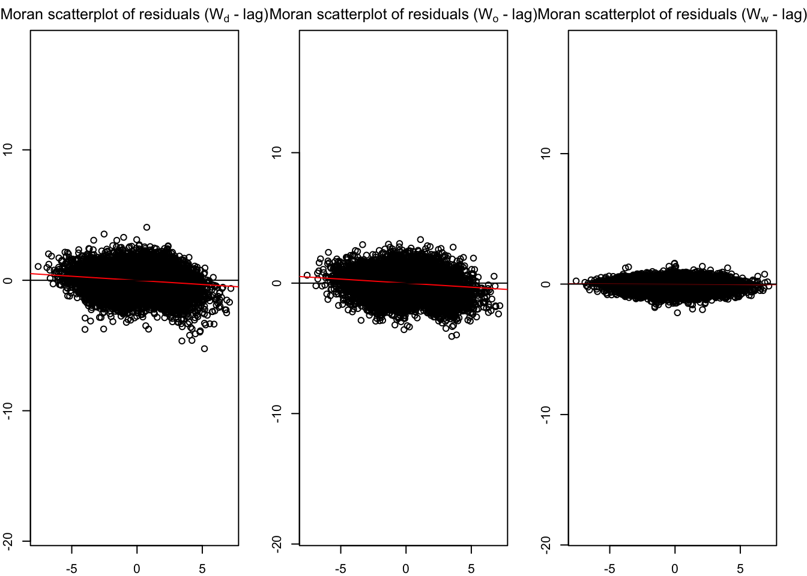
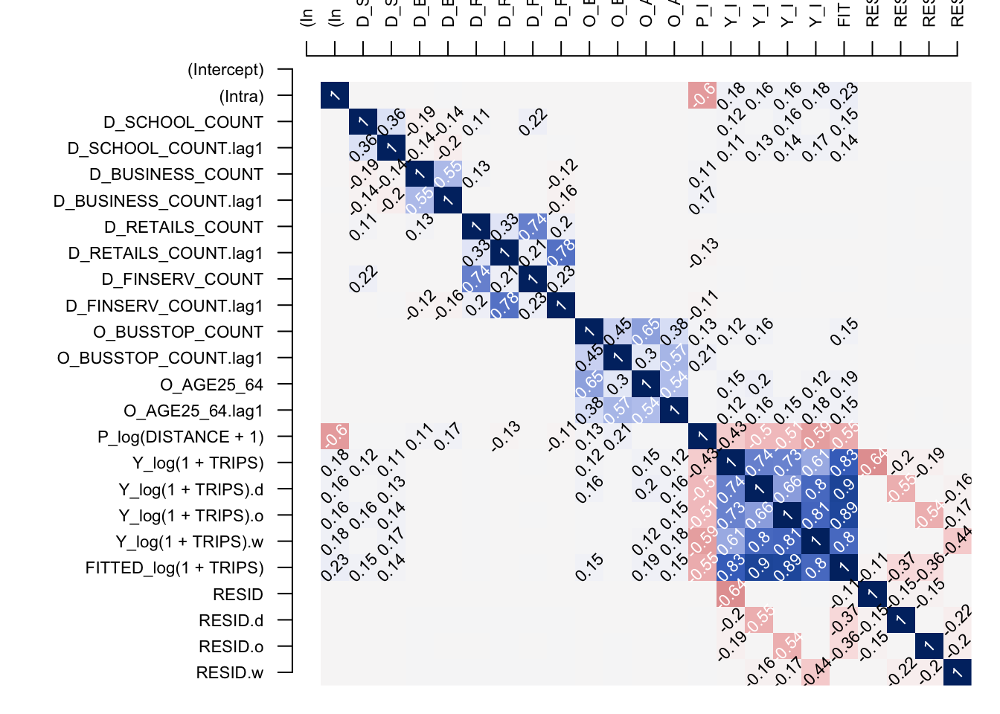

devtools::install_github("LukeCe/spflow")Hands-on_ex5
#Loading R packages
Next, we will load spflow and other R packages into R environment
pacman::p_load(tmap, sf, sp, DT, stplanr,
performance,
ggpubr, tidyverse, httr, Matrix, spflow, spdep)Data Preparation
3 data sets are required to calaibrate a SPatial Econometric Interaction Model: 1.) A Spatial Weight 2.) A tibble data.frame cosnisiting of origins, destination, flows and distances between origins and destination 3.) Tiblee data.frame consisiting of the explanatory variables
Retrieving data
mpsz_nb <- read_rds("data/rds/mpsz_nb.rds")
mpsz_flow <- read_rds("data/rds/mpsz_flow.rds")
mpsz_var <- read_rds("data/rds/mpsz_var.rds")Creating spflow network class objects
mpsz_net <- spflow_network(
id_net ="sg",
node_neighborhood =
nb2mat(mpsz_nb$by_contiguity),
node_data = mpsz_var,
node_key_column ="SZ_CODE")
mpsz_netSpatial network nodes with id: sg
--------------------------------------------------
Number of nodes: 313
Average number of links per node: 6.077
Density of the neighborhood matrix: 1.94% (non-zero connections)
Data on nodes:
SZ_NAME SZ_CODE BUSSTOP_COUNT AGE7_12 AGE13_24 AGE25_64
1 INSTITUTION HILL RVSZ05 2 330 360 2260
2 ROBERTSON QUAY SRSZ01 10 320 350 2200
3 FORT CANNING MUSZ02 6 0 10 30
4 MARINA EAST (MP) MPSZ05 2 0 0 0
5 SENTOSA SISZ01 1 200 260 1440
6 CITY TERMINALS BMSZ17 10 0 0 0
--- --- --- --- --- --- ---
308 NEE SOON YSSZ07 12 90 140 590
309 UPPER THOMSON BSSZ01 47 1590 3660 15980
310 SHANGRI-LA AMSZ05 12 810 1920 9650
311 TOWNSVILLE AMSZ04 9 980 2000 11320
312 MARYMOUNT BSSZ02 25 1610 4060 16860
313 TUAS VIEW EXTENSION TSSZ06 11 0 0 0
SCHOOL_COUNT BUSINESS_COUNT RETAILS_COUNT FINSERV_COUNT ENTERTN_COUNT
1 1 6 26 3 0
2 0 4 207 18 6
3 0 7 17 0 3
4 0 0 0 0 0
5 0 1 84 29 2
6 0 11 14 4 0
--- --- --- --- --- ---
308 0 0 7 0 0
309 3 21 305 30 0
310 3 0 53 9 0
311 1 0 83 11 0
312 3 19 135 8 0
313 0 53 3 1 0
FB_COUNT LR_COUNT COORD_X COORD_Y
1 4 3 103.84 1.29
2 38 11 103.84 1.29
3 4 7 103.85 1.29
4 0 0 103.88 1.29
5 38 20 103.83 1.25
6 15 0 103.85 1.26
--- --- --- --- ---
308 0 0 103.81 1.4
309 5 11 103.83 1.36
310 0 0 103.84 1.37
311 1 1 103.85 1.36
312 3 11 103.84 1.35
313 0 0 103.61 1.26mpsz_net_pairs <- spflow_network_pair(
id_orig_net = "sg",
id_dest_net ="sg",
pair_data = mpsz_flow,
orig_key_column = "ORIGIN_SZ",
dest_key_column = "DESTIN_SZ"
)
mpsz_net_pairsSpatial network pair with id: sg_sg
--------------------------------------------------
Origin network id: sg (with 313 nodes)
Destination network id: sg (with 313 nodes)
Number of pairs: 97969
Completeness of pairs: 100.00% (97969/97969)
Data on node-pairs:
DESTIN_SZ ORIGIN_SZ DISTANCE TRIPS
1 RVSZ05 RVSZ05 0 67
314 SRSZ01 RVSZ05 305.74 251
627 MUSZ02 RVSZ05 951.83 0
940 MPSZ05 RVSZ05 5254.07 0
1253 SISZ01 RVSZ05 4975 0
1566 BMSZ17 RVSZ05 3176.16 0
--- --- --- --- ---
96404 YSSZ07 TSSZ06 26972.97 0
96717 BSSZ01 TSSZ06 25582.48 0
97030 AMSZ05 TSSZ06 26714.79 0
97343 AMSZ04 TSSZ06 27572.74 0
97656 BSSZ02 TSSZ06 26681.7 0
97969 TSSZ06 TSSZ06 0 270mpsz_multi_net <- spflow_network_multi(mpsz_net, mpsz_net_pairs)
mpsz_multi_netCollection of spatial network nodes and pairs
--------------------------------------------------
Contains 1 spatial network nodes
With id : sg
Contains 1 spatial network pairs
With id : sg_sg
Availability of origin-destination pair information:
ID_ORIG_NET ID_DEST_NET ID_NET_PAIR COMPLETENESS C_PAIRS C_ORIG C_DEST
sg sg sg_sg 100.00% 97969/97969 313/313 313/313Correlation Analysis
Multicollinearity checks for a situation which 2 more explanatory variavles are highly related in a regression model
cor_formula <- log(1 + TRIPS) ~
BUSSTOP_COUNT +
AGE7_12 +
AGE13_24 +
AGE25_64 +
SCHOOL_COUNT +
BUSINESS_COUNT +
RETAILS_COUNT +
FINSERV_COUNT +
P_(log(DISTANCE + 1))
# Impedence from one point to another pointModel calibration
base_model <- spflow(
spflow_formula = log(1 + TRIPS) ~
O_(BUSSTOP_COUNT +
AGE25_64) +
D_(SCHOOL_COUNT +
BUSINESS_COUNT +
RETAILS_COUNT +
FINSERV_COUNT) +
P_(log(DISTANCE + 1)),
spflow_networks = mpsz_multi_net)
base_model--------------------------------------------------
Spatial interaction model estimated by: MLE
Spatial correlation structure: SDM (model_9)
Dependent variable: log(1 + TRIPS)
--------------------------------------------------
Coefficients:
est sd t.stat p.val
rho_d 0.680 0.004 192.554 0.000
rho_o 0.678 0.004 187.732 0.000
rho_w -0.396 0.006 -65.591 0.000
(Intercept) 0.410 0.065 6.266 0.000
(Intra) 1.313 0.081 16.263 0.000
D_SCHOOL_COUNT 0.017 0.002 7.885 0.000
D_SCHOOL_COUNT.lag1 0.002 0.004 0.551 0.581
D_BUSINESS_COUNT 0.000 0.000 3.015 0.003
D_BUSINESS_COUNT.lag1 0.000 0.000 -0.249 0.804
D_RETAILS_COUNT 0.000 0.000 -0.306 0.759
D_RETAILS_COUNT.lag1 0.000 0.000 0.152 0.880
D_FINSERV_COUNT 0.002 0.000 6.787 0.000
D_FINSERV_COUNT.lag1 -0.002 0.001 -3.767 0.000
O_BUSSTOP_COUNT 0.002 0.000 6.806 0.000
O_BUSSTOP_COUNT.lag1 -0.001 0.000 -2.364 0.018
O_AGE25_64 0.000 0.000 7.336 0.000
O_AGE25_64.lag1 0.000 0.000 -2.797 0.005
P_log(DISTANCE + 1) -0.050 0.007 -6.793 0.000
--------------------------------------------------
R2_corr: 0.6942944
Observations: 97969
Model coherence: ValidatedResidual Diagnostic Tests
old_par <- par(mfrow = c(1,3),
mar = c(2,2,2,2))
spflow_moran_plots(base_model)
corr_residual <- pair_cor(base_model)
colnames(corr_residual) <- substr(colnames(corr_residual),1,3)
cor_image(corr_residual)
Working with model control
spflow_formula <- log(1 + TRIPS) ~
O_(BUSSTOP_COUNT +
AGE25_64) +
D_(SCHOOL_COUNT +
BUSINESS_COUNT +
RETAILS_COUNT +
FINSERV_COUNT) +
P_(log(DISTANCE + 1))
model_control <- spflow_control(
estimation_method ="mle",
model = "model_1")
mle_model1 <- spflow(
spflow_formula,
spflow_network = mpsz_multi_net,
estimation_control = model_control)
mle_model1--------------------------------------------------
Spatial interaction model estimated by: OLS
Spatial correlation structure: SLX (model_1)
Dependent variable: log(1 + TRIPS)
--------------------------------------------------
Coefficients:
est sd t.stat p.val
(Intercept) 11.384 0.069 164.255 0.000
(Intra) -6.006 0.112 -53.393 0.000
D_SCHOOL_COUNT 0.093 0.003 28.599 0.000
D_SCHOOL_COUNT.lag1 0.255 0.006 44.905 0.000
D_BUSINESS_COUNT 0.001 0.000 10.036 0.000
D_BUSINESS_COUNT.lag1 0.003 0.000 18.274 0.000
D_RETAILS_COUNT 0.000 0.000 -1.940 0.052
D_RETAILS_COUNT.lag1 0.000 0.000 -2.581 0.010
D_FINSERV_COUNT 0.005 0.000 10.979 0.000
D_FINSERV_COUNT.lag1 -0.016 0.001 -17.134 0.000
O_BUSSTOP_COUNT 0.014 0.001 25.865 0.000
O_BUSSTOP_COUNT.lag1 0.015 0.001 21.728 0.000
O_AGE25_64 0.000 0.000 14.479 0.000
O_AGE25_64.lag1 0.000 0.000 14.452 0.000
P_log(DISTANCE + 1) -1.281 0.008 -165.327 0.000
--------------------------------------------------
R2_corr: 0.2831458
Observations: 97969
Model coherence: Validatedspflow_formula <- log(1 + TRIPS) ~
O_(BUSSTOP_COUNT +
AGE25_64) +
D_(SCHOOL_COUNT +
BUSINESS_COUNT +
RETAILS_COUNT +
FINSERV_COUNT) +
P_(log(DISTANCE + 1))
model_control <- spflow_control(
estimation_method ="mle",
model = "model_2")
mle_model2 <- spflow(
spflow_formula,
spflow_network = mpsz_multi_net,
estimation_control = model_control)
mle_model2--------------------------------------------------
Spatial interaction model estimated by: MLE
Spatial correlation structure: SDM (model_2)
Dependent variable: log(1 + TRIPS)
--------------------------------------------------
Coefficients:
est sd t.stat p.val
rho_d 0.731 0.003 218.603 0.000
(Intercept) 3.068 0.067 45.899 0.000
(Intra) -0.398 0.093 -4.291 0.000
D_SCHOOL_COUNT 0.063 0.003 24.291 0.000
D_SCHOOL_COUNT.lag1 0.054 0.005 11.802 0.000
D_BUSINESS_COUNT 0.001 0.000 8.790 0.000
D_BUSINESS_COUNT.lag1 0.001 0.000 3.925 0.000
D_RETAILS_COUNT 0.000 0.000 -1.076 0.282
D_RETAILS_COUNT.lag1 0.000 0.000 0.251 0.802
D_FINSERV_COUNT 0.007 0.000 18.054 0.000
D_FINSERV_COUNT.lag1 -0.009 0.001 -12.691 0.000
O_BUSSTOP_COUNT 0.003 0.000 8.269 0.000
O_BUSSTOP_COUNT.lag1 0.004 0.001 7.808 0.000
O_AGE25_64 0.000 0.000 3.918 0.000
O_AGE25_64.lag1 0.000 0.000 4.421 0.000
P_log(DISTANCE + 1) -0.351 0.007 -47.000 0.000
--------------------------------------------------
R2_corr: 0.5527887
Observations: 97969
Model coherence: Validatedspflow_formula <- log(1 + TRIPS) ~
O_(BUSSTOP_COUNT +
AGE25_64) +
D_(SCHOOL_COUNT +
BUSINESS_COUNT +
RETAILS_COUNT +
FINSERV_COUNT) +
P_(log(DISTANCE + 1))
model_control <- spflow_control(
estimation_method ="mle",
model = "model_8")
mle_model8 <- spflow(
spflow_formula,
spflow_network = mpsz_multi_net,
estimation_control = model_control)
mle_model8--------------------------------------------------
Spatial interaction model estimated by: MLE
Spatial correlation structure: SDM (model_8)
Dependent variable: log(1 + TRIPS)
--------------------------------------------------
Coefficients:
est sd t.stat p.val
rho_d 0.689 0.003 196.832 0.000
rho_o 0.687 0.004 192.214 0.000
rho_w -0.473 0.003 -142.469 0.000
(Intercept) 1.086 0.049 22.275 0.000
(Intra) 0.840 0.075 11.255 0.000
D_SCHOOL_COUNT 0.019 0.002 8.896 0.000
D_SCHOOL_COUNT.lag1 0.019 0.004 5.130 0.000
D_BUSINESS_COUNT 0.000 0.000 3.328 0.001
D_BUSINESS_COUNT.lag1 0.000 0.000 1.664 0.096
D_RETAILS_COUNT 0.000 0.000 -0.414 0.679
D_RETAILS_COUNT.lag1 0.000 0.000 -0.171 0.864
D_FINSERV_COUNT 0.002 0.000 6.150 0.000
D_FINSERV_COUNT.lag1 -0.003 0.001 -4.601 0.000
O_BUSSTOP_COUNT 0.003 0.000 7.676 0.000
O_BUSSTOP_COUNT.lag1 0.000 0.000 0.552 0.581
O_AGE25_64 0.000 0.000 6.870 0.000
O_AGE25_64.lag1 0.000 0.000 -0.462 0.644
P_log(DISTANCE + 1) -0.125 0.005 -22.865 0.000
--------------------------------------------------
R2_corr: 0.6965974
Observations: 97969
Model coherence: Validatedspflow_formula <- log(1 + TRIPS) ~
O_(BUSSTOP_COUNT +
AGE25_64) +
D_(SCHOOL_COUNT +
BUSINESS_COUNT +
RETAILS_COUNT +
FINSERV_COUNT) +
P_(log(DISTANCE + 1))
model_control <- spflow_control(
estimation_method ="mle",
model = "model_8")
mle_model9 <- spflow(
spflow_formula,
spflow_network = mpsz_multi_net,
estimation_control = model_control)
mle_model9--------------------------------------------------
Spatial interaction model estimated by: MLE
Spatial correlation structure: SDM (model_8)
Dependent variable: log(1 + TRIPS)
--------------------------------------------------
Coefficients:
est sd t.stat p.val
rho_d 0.689 0.003 196.831 0.000
rho_o 0.687 0.004 192.214 0.000
rho_w -0.473 0.003 -142.468 0.000
(Intercept) 1.086 0.049 22.275 0.000
(Intra) 0.840 0.075 11.254 0.000
D_SCHOOL_COUNT 0.019 0.002 8.896 0.000
D_SCHOOL_COUNT.lag1 0.019 0.004 5.130 0.000
D_BUSINESS_COUNT 0.000 0.000 3.328 0.001
D_BUSINESS_COUNT.lag1 0.000 0.000 1.664 0.096
D_RETAILS_COUNT 0.000 0.000 -0.414 0.679
D_RETAILS_COUNT.lag1 0.000 0.000 -0.171 0.864
D_FINSERV_COUNT 0.002 0.000 6.150 0.000
D_FINSERV_COUNT.lag1 -0.003 0.001 -4.601 0.000
O_BUSSTOP_COUNT 0.003 0.000 7.676 0.000
O_BUSSTOP_COUNT.lag1 0.000 0.000 0.552 0.581
O_AGE25_64 0.000 0.000 6.870 0.000
O_AGE25_64.lag1 0.000 0.000 -0.462 0.644
P_log(DISTANCE + 1) -0.125 0.005 -22.865 0.000
--------------------------------------------------
R2_corr: 0.6965973
Observations: 97969
Model coherence: Validated